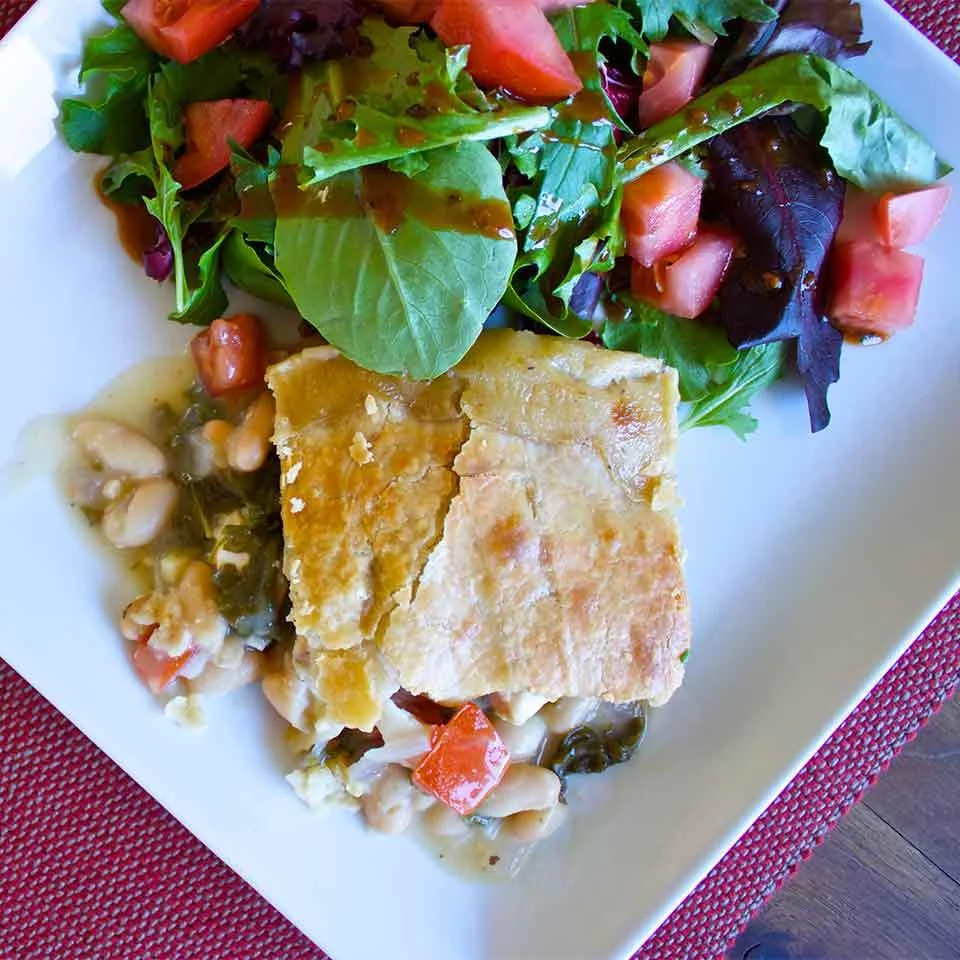

<- Go back
Chicken Pot Pie
Comfort food Tuscan style, this chicken pot pie is made with onions, kale,
and cannellini beans.

Ingredients
- 2 tablespoons butter
- 1/2 cup chopped red onion
- 1 tablespoon minced garlic
- 3-1/2 tablespoons all-purpose flour
- 1-1/2 cups Swanson® Unsalted Chicken Stock
- 2 cups baby kale, roughly chopped
- 1 (15.5 ounce) can cannellini beans, drained and rinsed
- 2 cups cubed, cooked chicken
- 3 medium (blank)s roma (plum) tomatoes, seeded and chopped
- 1/2 teaspoon dried oregano
- 1/2 teaspoon dried basil
- 1 pinch salt and pepper to taste
- 1 (9 inch) unbaked pie crust
Directions
-
Preheat oven to 350 degrees F (175 degrees C). Lightly oil a deep, round
baking dish.
-
Melt the butter in a large saucepan over medium heat. Add the onions and
cook until translucent, about 5 minutes. Add the minced garlic and cook
for one minute. Sprinkle the flour into the saucepan; cook and stir
until mixture darkens slightly, about 2 minutes. Whisk in the Swanson®
Unsalted Chicken Stock. Bring to a simmer over medium-high heat; reduce
heat to medium. Cook and stir until mixture thickens, about 3 minutes.
-
Stir in baby kale; cook until wilted. Add the cannellini beans, chicken,
and plum tomatoes; stir. Season with oregano, basil, salt and pepper to
taste. Pour mixture into prepared baking dish.
-
Place pie crust on top of the chicken mixture. Tuck under or trim edges
that extend over the sides. Make several slits in the crust with the tip
of a sharp knife to allow steam to escape.
-
Bake in preheat oven until crust has browned and mixture is bubbly,
about 30 minutes.